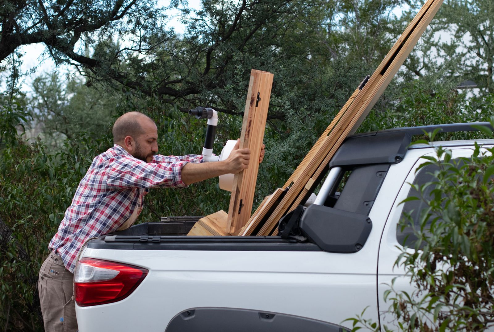
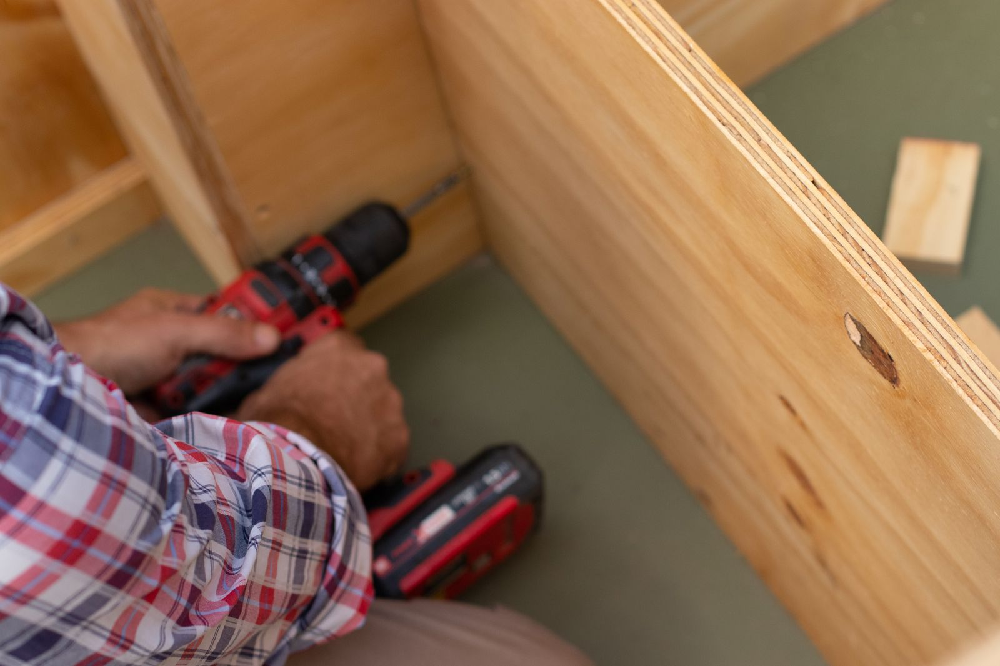
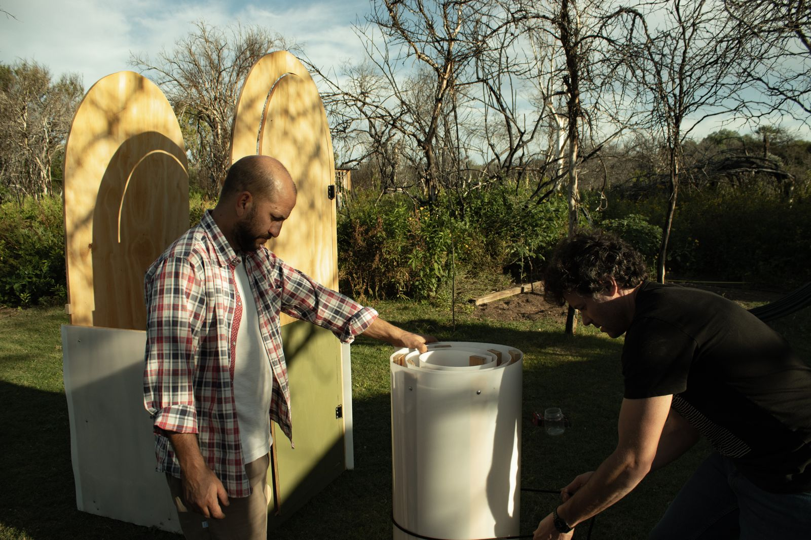

Habitual began in 2021 with a simple idea: provide a sustainable solution to the global sanitation crisis. Our founders, Marcos and Hugo, created the first Jardín prototype in 2022 and successfully sold it as a fully functional unit. Later that year, feedback and experimentation led to the Mini — a lightweight, flat-packed MVP designed for easy transport and assembly.
By 2024, more than ten units were in use, and the team relocated to Spain and Switzerland to bring Habitual to Europe. In 2025, Habitual embarked on a new mission: helping humanitarian NGOs and governments deliver safe sanitation in disaster zones, refugee camps and remote communities. Our goal remains the same — to deliver dignity, hygiene and sustainability wherever it is needed most.


